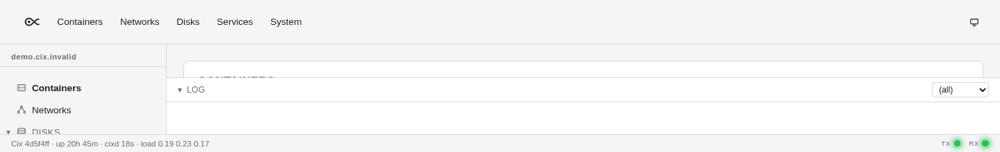

Read through the CLI.
$ cixctl site show
instance_name=cix
site_name=(none)
domain_suffix=internalReproduced product workflow
This is real output from a disposable Cix daemon—not a website mock-up. A CLI write changes API-owned state; an independent REST read and the first-party dashboard show the same result.
4d5f4ffaThe workflow
The site identity is a small example chosen because it is safe to reproduce. The same client boundary applies throughout Cix: cixctl and the dashboard call the REST API rather than private control paths.
$ cixctl site show
instance_name=cix
site_name=(none)
domain_suffix=internal$ cixctl site set \
--instance-name=demo \
--site-name=cix \
--domain-suffix=invalid
instance_name=demo
site_name=cix
domain_suffix=invalid$ curl -s \
http://127.0.0.1:18766/v1/system/site
{"instance_name":"demo",
"site_name":"cix",
"domain_suffix":"invalid"}The first-party dashboard
The dashboard header below rendered demo.cix.invalid from the same daemon after the CLI write. The capture is intentionally narrow: it proves the product surface without exposing host inventory.

Follow the evidence
GET /v1/system/site and PUT /v1/system/site are defined in the OpenAPI document and described in the API guide. The CLI and dashboard implementations are in the same source tree.